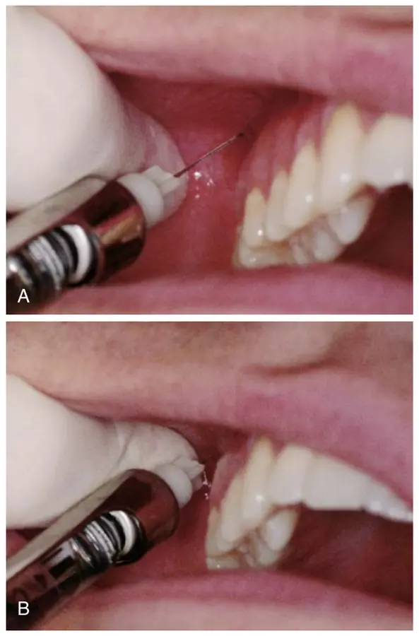

نسخه استخراجشده؛ ترجمه یا تأیید علمی انجام نشده است. وضعیت: captured
چند دقیقه پس از بلاک عصب آلوئولار فوقانی خلفی (PSA) در خانمی ریزجثه، سمت راست صورتش جلوی گوش ورم میکند. رنگ پوست هنوز عوض نشده است. چه اتفاقی افتاده و چرا؟
بلاک PSA شایعترین علت هماتوم قابلدیدن در بیحسی دندانپزشکی است؛ پس از آن بلاک منتال یا اینسیزیو و بعد IANB قرار دارند.
خون به حفرهی اینفراتمپورال میریزد که بافتش شل است و حجم زیادی خون را پیش از دیده شدن ورم جا میدهد. خونریزی تا وقتی ادامه دارد که فشار بیرون رگ از فشار درون رگ بیشتر شود یا لخته ببندد. برخلاف هماتوم IANB که معمولاً فقط داخل دهان دیده میشود، هماتوم PSA از بیرون صورت پیداست. در کام برعکس، بافت متراکم و چسبیده به استخوان است و هماتوم بهندرت پیش میآید.
ورم اول بیرنگ است و در کنار صورت نزدیک مفصل گیجگاهیـفکی ظاهر میشود؛ در روزهای بعد به پایین و جلو، به سمت پایین گونه، کشیده میشود و کبود میشود.
نکتهی طلایی: رگهای مقصر پشت، بالا و داخل توبروزیتهاند و فشار مستقیم به آنها سخت است؛ پیشگیری با سوزن کوتاه و عمق درست خیلی مؤثرتر از درمان است. تا بهبود کامل، درمان دیگری در آن ناحیه شروع نکن.
